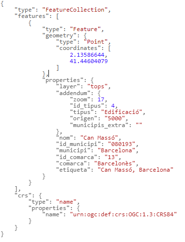
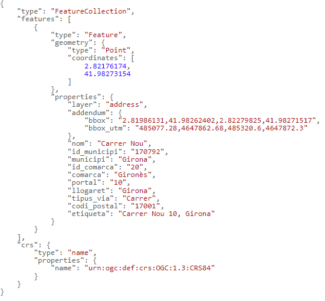
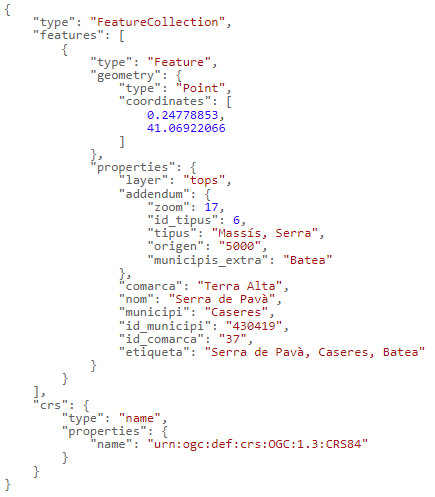

Search with autocomplete
Connection URL: https://eines.icgc.cat/geocodificador/autocompletar (GET)
Description
The autocompletar operation gives real-time result suggestions without having to type the whole location: as text is entered in the search box, requests are sent to autocompletar, in order to find answers quickly.
It is essential to indicate the text to search for in the text parameter.
The result is obtained in GeoJSON format.
When integrating into other applications, it is recommended to combine autocompletar and cerca:
- as the user types the text to search, send requests to autocompletar, in order to find answers quickly.
- once the text has been completed, if the answers provided by autocompletar are not enough, you can press the [Enter] key and make a request to cerca operation.
Since requests to autocompletar generally respond directly to text input by the user, typing speed must be taken into account in order not to crash the requests.
It is also necessary to take into account that the responses can be asynchronous and not in the same order in which they were sent.
To search for the coordinates corresponding to the toponym can masso,barcelona you must make the request https://eines.icgc.cat/geocodificador/autocompletar?text=can%20masso,barcelona&layers=tops&size=1, which has the answer: 
Building the query
The request to the API is built from the URL https://eines.icgc.cat/geocodificador/autocompletar, followed by the sign ? and the sequence of parameters, separated by the sign &.
The parameters are as follows:
- text: Contains the text to search for. It is a mandatory parameter.
It is important to note that you must separate the name of the municipality with a comma, as follows:
-
name_of_street housenumber, municipality
-
name_of_isolated_edifice, municipality
-
toponym, municipality
Examples:
- [https://eines.icgc.cat/geocodificador/autocompletar?text=nou 10,girona](https://eines.icgc.cat/geocodificador/autocompletar?text=nou 10,girona){target="_blank"}
- [https://eines.icgc.cat/geocodificador/autocompletar?text=can riera,Vilademuls&layers=address](https://eines.icgc.cat/geocodificador/autocompletar?text=can riera,Vilademuls&layers=address){target="_blank"}
- [https://eines.icgc.cat/geocodificador/autocompletar?text=montclar,riudecanyes](https://eines.icgc.cat/geocodificador/autocompletar?text=montclar,riudecanyes){target="_blank"}
- layers: Filter by data type
The types of data to search can be differentiated by indicating the layers parameter, with the following values:
.address: postal addresses
. tops: all toponyms
.topo_tipus_id: toponyms of type id, where id is a string of numbers between 1 and 22, adding leading 0 if less than 10. For example: topo_tipus_01 to search for Caps de municipi. The table with the types of toponyms and their identifiers can be consulted at Toponyms table
The following values can be indicated to segregate the toponyms into two groups:
.topo1: toponyms referring to population groups (municipalities, capitals of municipalities, population entities, disseminated and neighborhoods)
.topo2: rest of toponyms.
Example, to find toponyms with the name Riera de Gaià: https://eines.icgc.cat/geocodificador/autocompletar?text=riera%20de%20gaia&layers=topo1,topo2
- size: is used to define the maximum number of results
By default, up to 10 results of each of the types indicated in layers are returned. A different number can be specified with the size parameter. The maximum value is 40.
For example, to find a single place name: https://eines.icgc.cat/geocodificador/autocompletar?text=riera%20de%20gaia&layers=topo1&size=1
- boundary.rect.min_lon, boundary.rect.min_lat, boundary.rect.max_lon i boundary.rect.max_lat: to search in a rectangular area
You can spatially limit the search by indicating the latitude and longitude coordinates of a rectangle with these parameters.
Example: [https://eines.icgc.cat/geocodificador/autocompletar?text=biblioteca&layers=topo1,topo2&size=300&boundary.rect.min_lon=2.790885602127&boundary.rect.min_lat=41.951744582496&boundary.rect.max_lon=2.847448636407&boundary.rect.max_lat=42.012358869945](https://eines.icgc.cat/geocodificador/autocompletar?text=biblioteca&layers=topo1,topo2&size=300&boundary.rect.min_lon=2.790885602127&boundary.rect.min_lat=41.951744582496&boundary.rect.max_lon=2.847448636407&boundary.rect.max_lat=42.012358869945){target="_blank"}
- boundary.circle.lon, boundary.circle.lat, boundary.circle.radius:to search in a circular area
The search can be spatially limited by specifying the coordinates of a circle with the parameters boundary.circle.lon and boundary.circle.lat (center) and the parameter boundary.circle. radius (radius in km).
Example: [https://eines.icgc.cat/geocodificador/autocompletar?text=biblioteca&layers=topo1,topo2&size=5&boundary.circle.lon=2.815683&boundary.circle.lat=41.976216&boundary.circle.radius=3](https://eines.icgc.cat/geocodificador/autocompletar?text=biblioteca&layers=topo1,topo2&size=5&boundary.circle.lon=2.815683&boundary.circle.lat=41.976216&boundary.circle.radius=3){target="_blank"}
- focus.point.lat, focus.point.lon: prioritization of results by proximity
To prioritize the results closest to some coordinates, you must indicate them with these parameters.
Example: [http://localhost:3300/autocompletar?text=biblioteca&focus.point.lat=41.972509114053196&focus.point.lon=2.828636169433594&layers=topo1%2Ctopo2&size=5](http://localhost:3300/autocompletar?text=biblioteca&focus.point.lat=41.972509114053196&focus.point.lon=2.828636169433594&layers=topo1%2Ctopo2&size=5){target="_blank"}
- com: to filter by 'comarca'
The com parameter allows you to specify the name of the 'comarca' or its identifier.
You can consult the list of 'comarca' in Table of regions
Examples:
https://eines.icgc.cat/geocodificador/autocompletar?text=biblioteca&com=girones ( indicating the name of the 'comarca')
https://eines.icgc.cat/geocodificador/autocompletar?text=biblioteca&com=20 ( indicating 'comarca''s identifier)
- mun: to filter by municipality
The mun parameter allows you to specify the name of the municipality or its identifier.
The list of municipalities can be consulted at Table of municipalities
Examples:
https://eines.icgc.cat/geocodificador/autocompletar?text=biblioteca&mun=girona ( indicating the name of the municipality)
https://eines.icgc.cat/geocodificador/autocompletar?text=biblioteca&mun=170792 ( indicating municipality's identifier)
Input parameters
| Parameter | Type | Mandatory | Description | Default value | Example |
|---|---|---|---|---|---|
| text | text string | Yes | Text to search | Riera de Sallent | |
| focus.point.lat | floating point number | No | Latitude of the point for which you want to prioritize the results | 41.430371882652814 | |
| focus.point.lon | floating point number | No | Length of the point by which you want to prioritize the results | 1.8566894531250002 | |
| layers | text string | No | Type of elements to search: [address, tops, topo_tipus_id, topo1, topo2] | topo1,topo2,address | address,topo1 |
| size | integer | No | Number of results. The maximum is 40 | 10 | 5 |
| com | text string | No | Identifier of a 'comarca', within which you want to restrict the search | 01 | |
| mun | text string | No | Identifier of a municipality, within which you want to restrict the search | 080018 | |
| boundary.circle.lat | floating point number | No | Latitude of search circle point | 41.430371882652814 | |
| boundary.circle.lon | floating point number | No | Search circle point length | 2.81233 | |
| boundary.circle.radius | floating point number | No | search circle radius (km) | 10 | |
| boundary.rect.min_lat | floating point number | No | Latitude of bottom edge of search rectangle | 41.909303728668824 | |
| boundary.rect.min_lon | floating point number | No | Length of bottom edge of search rectangle | 2.694053649902344 | |
| boundary.rect.max_lat | floating point number | No | Latitude of top edge of search rectangle | 42.01142264969458 | |
| boundary.rect.max_lon | floating point number | No | Length of the top edge of the search rectangle | 2.911033630371094 |
Output parameters
Results are returned in GeoJSON format.
The features.properties element has the fields described in the following table:
| Field | Description | Applicable to elements |
|---|---|---|
| layer | Type of element. The possible values are those indicated in the input layers parameter | All |
| etiqueta | Field Aggregation. By address: portal street, municipality ('llogaret'). Note: If the 'llogaret' coincides with the municipality, it is not indicated. By place names: place name, municipality | All |
| municipi | Municipality. In some toponyms, there is no municipality assigned and it takes the value "-" | All |
| id_municipi | Municipi ID. In some toponyms, there is no municipality assigned and it takes the value "" | All |
| comarca | 'comarca'. In some toponyms, there is no 'comarca' assigned and it takes the value "-" | All |
| id_comarca | 'comarca' ID. In some toponyms, there is no 'comarca' assigned and it takes the value "" | All |
| llogaret | 'llogaret' | Addresses |
| portal | Housenumber of the address | Addresses |
| nom | Name of the street, isolated building or toponym | All |
| tipus_via | Street type | Addresses |
| codi_postal | Postal code | Addresses |
| distancia | Distance in kilometers to the point indicated with the fields focus.point.lat, focus.point.lon | All |
| addendum.origin | Scale origin | Place names |
| addendum.zoom | Optimum zoom level | Place names |
| addendum.tipus | Toponym type | Place names |
| addendum.id_tipus | Toponym type identifier | Place names |
| addendum.municipis_extra | Other municipalities assigned | Place names |
| addendum.bbox | Geographic coordinates of the rectangle containing the street | Addresses |
| addendum.bbox_utm | UTM coordinates of the rectangle containing the street | Addresses |
Output examples according to layer type
| Postal address |
|---|
| https://eines.icgc.cat/geocodificador/autocompletar?text=nou%2010%20girona&layers=address&size=1 |
|  |
| Toponym |
|---|
| https://eines.icgc.cat/geocodificador/autocompletar?text=serra%20de%20pava&layers=tops&size=1 |
|  |